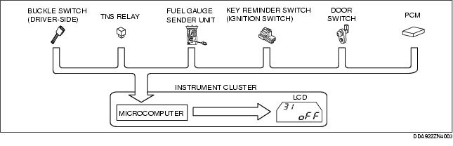
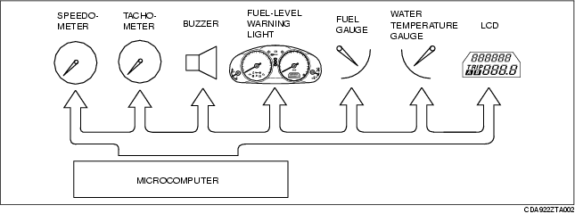

Input/output check mode operation
Input Circuit Check
• When the parts listed in the chart are operated and signal is output to the instrument cluster, the built-in microcomputer determines the operability of the input circuit based on that signal.

Individual Circuit Check
• By operating the parts listed in the chart, the built-in microcomputer determines the operability of the individual parts.
